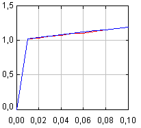

Stiff equationsAn ordinary differential equation is said to be stiff when its solutions comprise two or more terms that change at speeds which differ in several orders of magnitude. Consider the simple one-dimensional initial value problem: x'(t) = -1000 x(t) + 3000 - 2000 exp(-t), x(0) = 0, |
 |
which has the exact solution x(t) = 3 - 997/999 exp(-1000t) - 2000/999 exp(-t). The solution contains a slow-changing exponential together with a fast-changing one. Although the fast exponential quickly contributes with only very small values, its presence forces a typical explicit algorithm to keep a small step size, even after the transient part of the solution is considerably small. This is because of the poor stability properties of explicit algorithms.
This simulation plots the real solution (in black) together with a solution found using a Runge-Kutta 5(4) adaptive algorithm (red) and a solution found using the Radau5 method (blue), which is especially suited for stiff equations. Notice that the Radau5 method allows for larger step sizes with very good accuracy and stability properties.